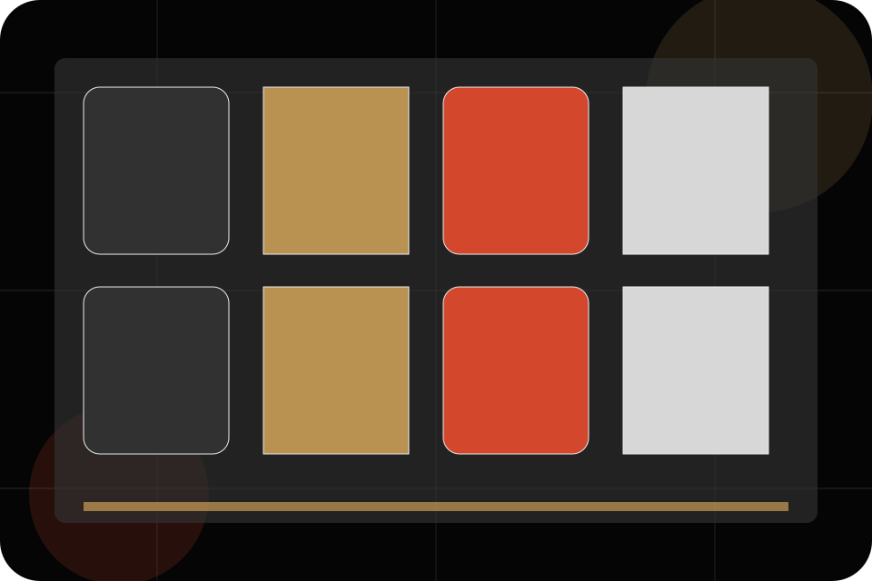
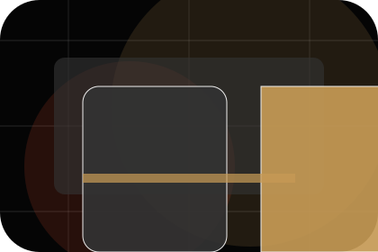
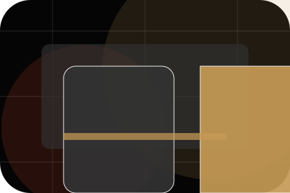
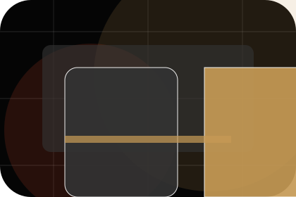
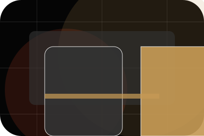
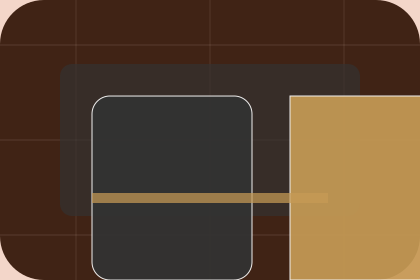

Artists / 01
Artists by Stage
Artists shaped for entertainment, music & performance decisions.
Artists opens as a clear entertainment decision hub: what Stage offers, who it helps, why it matters, and which route to take first.
The first screen combines positioning, proof, primary action, and fast internal navigation, so people can act immediately or compare the rest of the artists route with context.
Exposure reviewControl planResponse route
Dark poster hero
Choose ticket fit
Select the closest route and Stage keeps the next step, proof, and follow-up expectation aligned with excitement and access.

Artists / 02
Lineup
Lineup adds dark context to the artists route, using the indie film poster system structure to support excitement and access before visitors choose a next step.
Stage uses poster event cards and focused copy to make the decision easier to scan, aligning the section with excitement and access rather than filling space.
Explore ArtistsLineup gives the page a specific angle instead of repeating the navigation label.
The poster event cards show what to compare, what to avoid, and what matters most for entertainment, music & performance visitors.
The final cue points to a useful internal route so the section keeps the journey moving.
Artists / 03
Profiles
Profiles introduces the people, roles, or specialist credibility behind Stage so the decision feels less anonymous.
The copy ties names, roles, credentials, or availability back to the decision on the page instead of treating profiles as decorative biographies.
Explore ArtistsRole
The person, team, or specialist function connected to profiles is easy to understand.
Credibility
Credentials, responsibilities, or availability are tied to the visitor's decision, not listed for decoration.
Handoff
The section explains how to move from profile interest to a practical conversation or booking path.
Artists / 04
Music
Music adds dark context to the artists route, using the indie film poster system structure to support excitement and access before visitors choose a next step.
Stage uses poster event cards and focused copy to make the decision easier to scan, aligning the section with excitement and access rather than filling space.
Explore ArtistsContext
Music gives the page a specific angle instead of repeating the navigation label.
Judgment
The poster event cards show what to compare, what to avoid, and what matters most for entertainment, music & performance visitors.
Direction
The final cue points to a useful internal route so the section keeps the journey moving.
Artists / 05
Videos
Videos adds dark context to the artists route, using the indie film poster system structure to support excitement and access before visitors choose a next step.
Stage uses poster event cards and focused copy to make the decision easier to scan, aligning the section with excitement and access rather than filling space.
Explore Artists

Context
Videos gives the page a specific angle instead of repeating the navigation label.
Artists / 06
Dates
Dates adds dark context to the artists route, using the indie film poster system structure to support excitement and access before visitors choose a next step.
Stage uses poster event cards and focused copy to make the decision easier to scan, aligning the section with excitement and access rather than filling space.
Explore ArtistsContext
Dates gives the page a specific angle instead of repeating the navigation label.

Judgment
The poster event cards show what to compare, what to avoid, and what matters most for entertainment, music & performance visitors.

Direction
The final cue points to a useful internal route so the section keeps the journey moving.
Artists / 08
Press
Press adds dark context to the artists route, using the indie film poster system structure to support excitement and access before visitors choose a next step.
Stage uses poster event cards and focused copy to make the decision easier to scan, aligning the section with excitement and access rather than filling space.
Explore ArtistsContext
Press gives the page a specific angle instead of repeating the navigation label.
Judgment
The poster event cards show what to compare, what to avoid, and what matters most for entertainment, music & performance visitors.
Direction
The final cue points to a useful internal route so the section keeps the journey moving.
Artists / 09
Discover
Discover adds dark context to the artists route, using the indie film poster system structure to support excitement and access before visitors choose a next step.
Stage uses poster event cards and focused copy to make the decision easier to scan, aligning the section with excitement and access rather than filling space.
Explore ArtistsContext
Discover gives the page a specific angle instead of repeating the navigation label.
Judgment
The poster event cards show what to compare, what to avoid, and what matters most for entertainment, music & performance visitors.
Direction
The final cue points to a useful internal route so the section keeps the journey moving.
Artists / 10
View Tickets
Stage closes the artists route with a clear action, a quick reminder of the value, and a low-friction way to view tickets.
Visitors who are ready can use the primary action. Visitors who are still comparing can scan the section links, proof, and support routes before they view tickets.
View TicketsThe final block keeps the choice simple: act now, compare one more proof route, or send enough detail for a focused response.
View Ticketsexcitement and access
View Tickets
An entertainment site with film-poster rhythm, dark editorial cards, ticket routes, and venue proof. Artists ends with a direct path to view tickets, plus enough context for visitors who still need to compare.

View TicketsNotes
Information is provided for planning and should be reviewed for the final client, location, and operating rules.